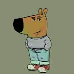

Olen ohjelmistokehittaja, jolla on kokemusta seka frontend- etta backend-kehityksesta. Frontendissa osaan HTML, CSS, JavaScript, TypeScript ja React. Backendissa minulla on kokemusta Pythonista, PHP:sta, Node.js:sta, Express.js:sta seka hieman FastAPI:sta.